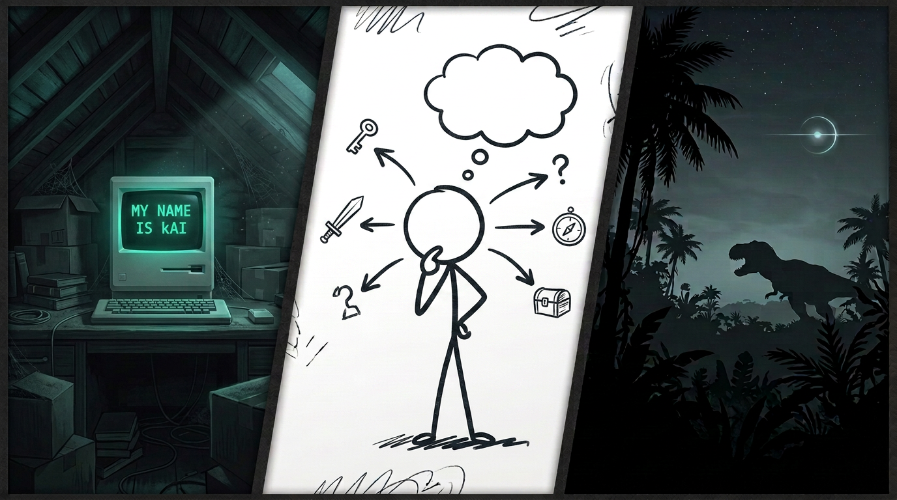

Playable Narrative Samples
Itch.io Narrative Showcase

Itch.io collection featuring my playable narrative and interactive samples highlighting my approach to branching structure, worldbuilding, and player-facing storytelling.
View Projects